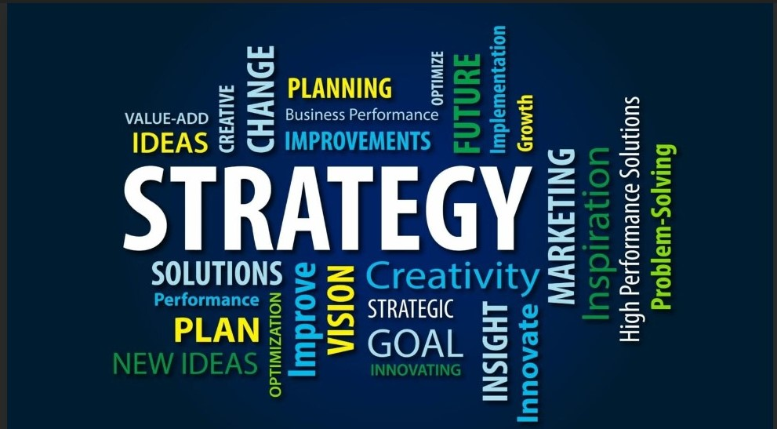

Kuza Foundation develops sustainable solutions that address the root causes of social problems. Rather than just providing short-term assistance, the organization may strive to facilitate long-term change by working to address systemic issues that underlie social problems.
Long-term goals for Kuza Foundation focus on creating sustainable solutions and promoting systemic change that can lead to lasting impact and improved quality of life for the communities we serve. These goals is guided by our mission and values and is regularly evaluated and updated to ensure their effectiveness and relevance.
Overall, long-term goals for Kuza Foundation is specific, measurable, and achievable, and it align with the organization's mission and values. It's being regularly evaluate progress towards these goals and adjust strategies as necessary to ensure their continued relevance and effectiveness.
OUR LONG TERM GOAL INCLUDES:
- Conducting community needs assessments: Kuza Foundation engage in community needs assessments to identify the most pressing social issues affecting the community in which they operate.
- Developing evidence-based programs and services: We develop programs and services that address the root causes of these issues in a sustainable manner.
- Building strategic partnerships: We also partner with other organizations, institutions, and government entities to leverage expertise and resources for greater impact.
- Advocating for systemic change: We also engage in advocacy efforts to push for systemic change that addresses social issues at a larger scale.
- Measuring and evaluating impact: We measure and evaluate the impact of their programs and services to ensure their effectiveness and promote continuous improvement.
- Advocating for policy change: We advocate for policy change at the local, state, and national levels to address systemic issues that contribute to social problems.
- Supporting research and innovation: We prioritize supporting research and innovation that can lead to new solutions for social problems.
- Addressing environmental sustainability: We prioritize addressing environmental sustainability issues such as climate change, which can have far-reaching impacts on social problems.
SHORT TERM GOAL
Kuza Foundation short-term goals is specific and achievable, and it align with the organization's long-term vision and mission. It's being regularly review and update these goals as the organization evolves and grows.
OUR SHORT TERM GOAL INCLUDES:
- Building a strong network: We develop partnerships with local businesses and individuals, and network with other organizations in their area to increase visibility and support for their mission.
- Developing a fundraising plan: We develop a plan to raise funds for our initiatives, including setting fundraising goals and identifying potential funding sources.
- Establishing processes: We establish processes for managing volunteers, tracking donations, and setting up programs and services.
- Building a strong team: We set up a recruitment and onboarding process to attract and retain talented staff and volunteers who are passionate about the organization's mission.
- Developing a marketing strategy: We develop a marketing strategy to raise awareness about our organization and the issues we are working to address.